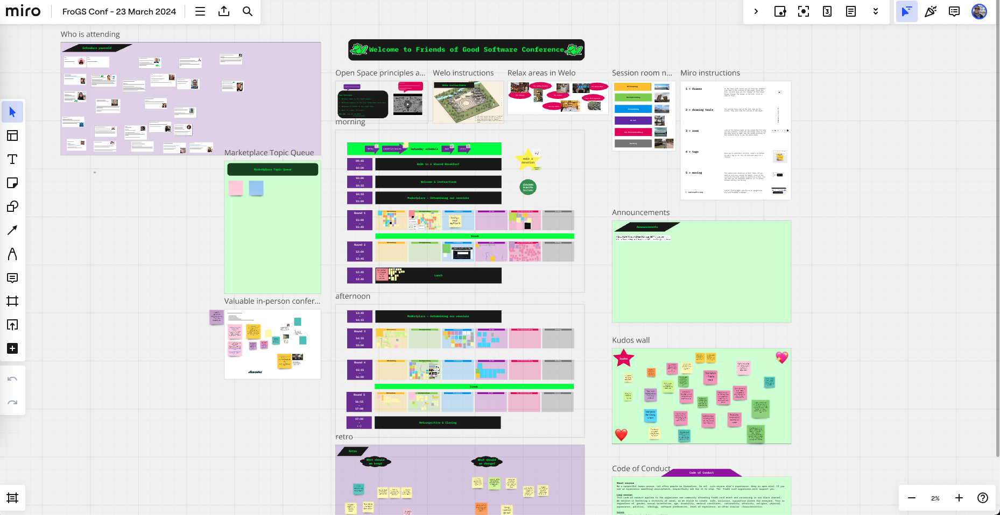

Event format

FroGS Conf uses the Open Space format, so everyone can learn from and share with each other. In this format, attendees are also session contributors. It’s a way to build an experience focused on those meaningful interactions you have during the breaks at a normal conference.
Anyone who wants to initiate a topic can claim a slot in the agenda. Once you are at the event, the organizers' job is mostly over. They have provided a space and the tools for the event; it’s up to you to participate and make it a great event. At the beginning of the event, we will go over the open space principles and rules as a reminder.
Which tools do you use?
-
Whereby for video conferencing
We're paying Whereby during the months when we host events. -
Miro for online whiteboarding
We're using a paid instance of Miro (it's Joep's) to plan the schedule, pitch topics, and take notes during the sessions. -
Local Schedule for scheduling across time zones
Markus Tacker, our steadfast supporter and originator of the FroGS name, built a great tool to view schedules in your own time zone. -
Slack for event reminders and brainstorming topics
The Slack invitation link is on the confirmation page once you register for an event.
Open Space format
-
Whoever comes is the right people
As a facilitator, you should welcome anyone who has joined your session, and not frustrated if you expected different people.
As a participant, you should be ready to collaborate with anyone. -
Whenever it starts is the right time
As a facilitator, if you need some time to prepare, take it. This might lead to people getting bored and go join another session. As a participant, you're welcome to join sessions already in progress. Respect the people who have already started, and jump in quietly. -
Wherever it is, is the right place
You will be offered several spaces for your session. Choose the one that fits your needs as a facilitator or as a participant. -
Whatever happens is the only thing that could have
Be prepared to be surprised. Don’t be annoyed if you get feedback. Don’t be disappointed if it doesn’t work. Try again if need be. -
When it’s over, it’s over
As a facilitator, it’s up to you to mind your timebox. The organizers will not do it for you. Keep in mind that the participants of your session might want to go to another session after yours, and that the room might be reserved after. Feel free to continue in a different location with anyone who is interested.
Law of mobility (law of two feet)
If anyone finds themselves in a session where they are neither learning nor contributing, they have the responsibility to themselves to go to a more interesting place.
Facilitating a session
We have a dedicated channel in our Slack space called #friends-of-good-sessions to support you in facilitating a session. If you want feedback on your idea or are looking for a co-facilitator, go there and ask!
Possible session topics
Since the unconference is called “Friends of Good Software conference” we'd like to see sessions related to the themes of software and quality. For your session format you have several options: presentation, discussion, coaching session, workshop, trying out something new, etc. Find a format that works for you.
